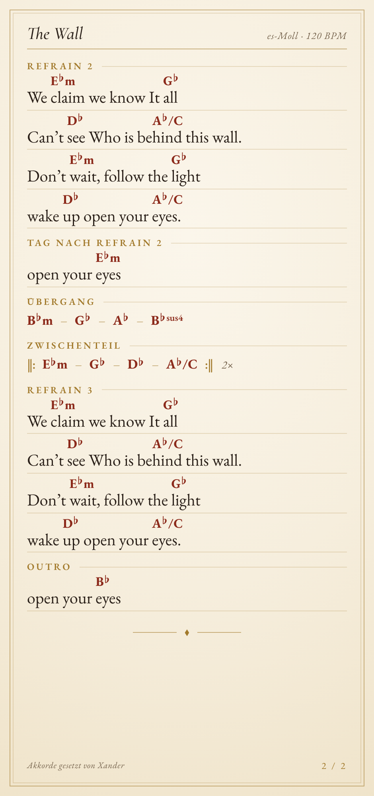
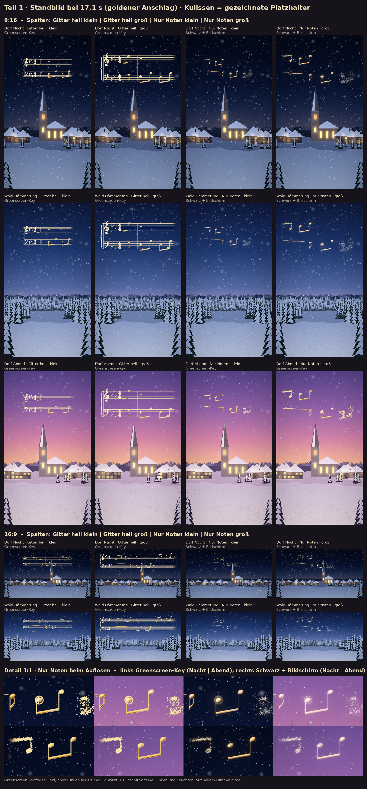

The Wall – Ablage
Stand 17.11.2026 · „Laden“ speichert die Datei (in Safari: lange drücken → „Verknüpfte Datei laden“).
Master
The Wall A v6 – Club-Masterneueste Fassung, −10 LUFS · The-Wall_A_v6_Club.mp3 · 10.2 MB Vergleich v5 / v61 Piep = v5, 2 Pieps = v6 · VERGLEICH-v6.mp3 · 5.3 MB The Wall C v5 – Club-MasterSpur 4 als Hauptgesang · The-Wall_C_v5_Club.mp3 · 10.2 MB Gesang GETUNT (v6, mit Effekten)
Gesang Haupt – getunt v6Tonhöhe korrigiert, mit Effekten · The-Wall_v6_Gesang-Haupt.mp3 · 10.2 MB Gesang Doppel – getunt v6Tonhöhe korrigiert, mit Effekten · The-Wall_v6_Gesang-Doppel.mp3 · 10.2 MB Gesang UNGETUNT (Original-Aufnahme)
Gesang 3 – ungetunt, originaltrocken, wie aufgenommen · Gesang-Platzhalter-3.wav · 36.5 MB Doppel 4 – ungetunt, originaltrocken, wie aufgenommen · Doppel-Platzhalter-4.wav · 36.5 MB Einzelspuren
Instrumental-Masterohne Gesang · The-Wall_v5_Instrumental-Master.mp3 · 10.2 MB ChorThe-Wall_v5_Chor.mp3 · 10.2 MB Chor OberterzThe-Wall_v5_Chor-Oberterz.mp3 · 10.2 MB Chor UnterterzThe-Wall_v5_Chor-Unterterz.mp3 · 10.2 MB Cubasis-Projekt (v6)
The-Wall-v6.cbpProjektdatei – alle 5 Dateien dieses Abschnitts in einen Ordner legen · The-Wall-v6.cbp · 404 KB Gesang 3 – getunt v6, trockengehört ins Projekt · Gesang-Platzhalter-3.wav · 36.5 MB Doppel 4 – getunt v6, trockengehört ins Projekt · Doppel-Platzhalter-4.wav · 36.5 MB Chor 1 (alt 36)gehört ins Projekt · Chor1-Platzhalter-alt36.wav · 36.5 MB Chor 2 (alt 38)gehört ins Projekt · Chor2-Platzhalter-alt38.wav · 36.5 MB The Wall – sauberes MIDIalle Spuren als MIDI · the-wall-sauber.mid · 39 KB EinstellungenSpuren, Effekte, Fader, Master · Einstellungen-The-Wall-sauber.pdf · 221 KB Anleitung für KISong-Beschreibung · Anleitung-fuer-KI.pdf · 172 KB Noten & Akkorde
Klavierpartitur5 Seiten, beide Hände, Akkorde + Text · THE-WALL-KLAVIER.pdf · 320 KB Klavier – Hörprobeganzer Song · the-wall-klavier-vorschau.mp3 · 6.1 MB Klavier – MIDIrechte / linke Hand · the-wall-klavier.mid · 16 KB Klavier – MusicXMLfür Notenprogramme · the-wall-klavier.musicxml · 398 KB Akkordblatt Seite 1THE-WALL-AKKORDE-BILD-XANDER-1.png · 774 KB
Akkordblatt Seite 2THE-WALL-AKKORDE-BILD-XANDER-2.png · 748 KB
Akkordblatt – PDFTHE-WALL-AKKORDE-BILD-XANDER.pdf · 230 KB Akkordblatt – TextTHE-WALL-AKKORDE.txt · 1 KB Akkorde-ziehen-SeiteAkkorde auf Silben schieben · AKKORDE-ZIEHEN.html · 14 KB Notenvideo
Kontaktbogenalle Kulissen + Looks · KONTAKTBOGEN.png · 2.6 MB
Vergleich Kulissen9:16 · VERGLEICH-KULISSEN.mp4 · 18.3 MB Gold-Noten Intro 9:16Greenscreen · teil1-intro_L2-noten-gold_9x16_gruen.mp4 · 6.4 MB Gold-Noten Intro 16:9Greenscreen · teil1-intro_L2-noten-gold_16x9_gruen.mp4 · 6.5 MB Gold-Noten Schaukeln 9:16Greenscreen · teil2-schaukeln_L2-noten-gold_9x16_gruen.mp4 · 1.8 MB Formant – HörprobeA-Chor / O-Chor · formant-hoerprobe.mp3 · 2.7 MB Formant – MIDIformant-chor.mid · 2 KB Formant – RezeptREZEPT-FORMANT.txt · 2 KB Alle Seiten